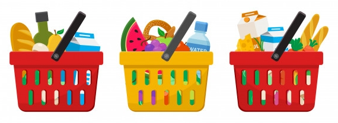

Sdílený seznam
Většina z nás s někým něco sdílí, ať už to jsou úkoly, plány,
vybavení na cesty nebo společné nákupy do domácnosti.
Jsme Kateřina a Kristina a společně chceme vytvořit
webovou aplikaci, přes kterou si vytvoříte sdílený - třeba nákupní -
seznam. Do něj budou uživatelé moci přidávat položky dle kategorií
(např. potraviny, drogerie, lékárna, apod.). Takové kategorie umožní
položky seskupovat, a nebo seznam podle nich filtrovat, odškrtávat
jednotlivé položky i kategorie jako koupené či vyřešené.
